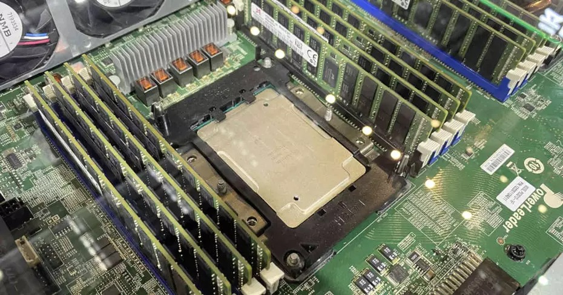
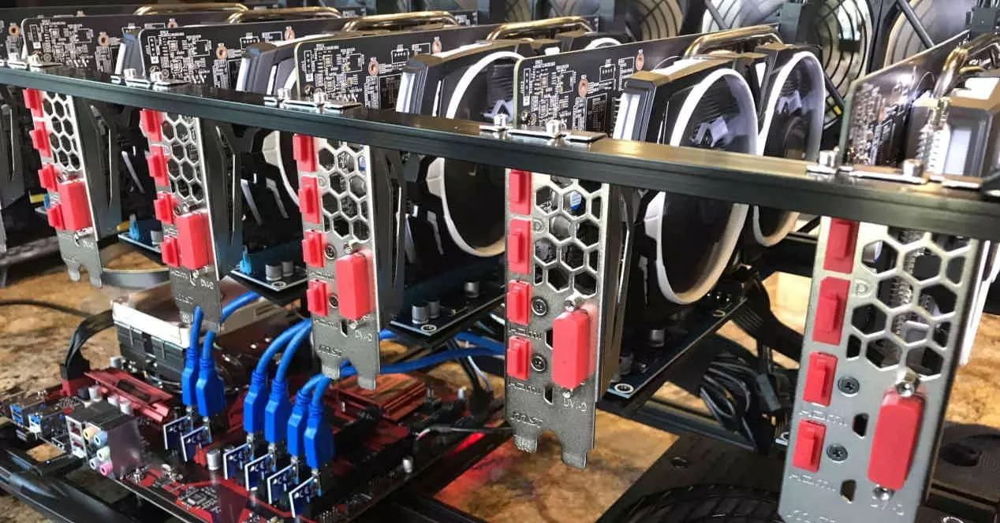
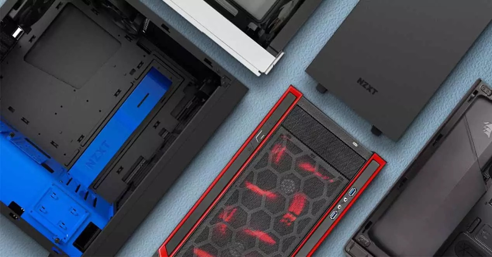
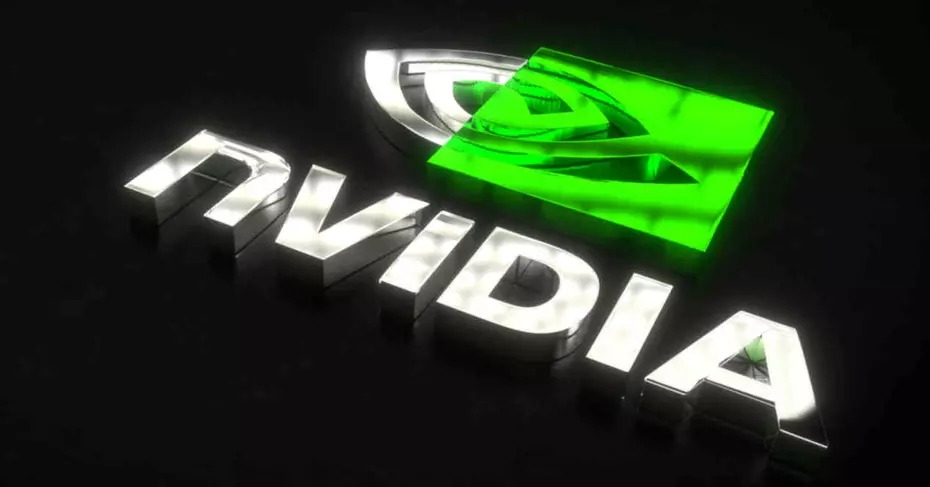
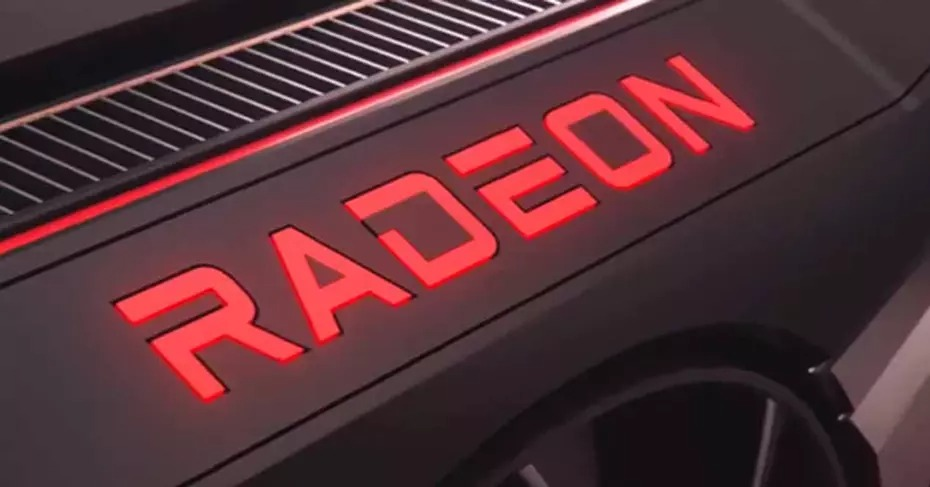
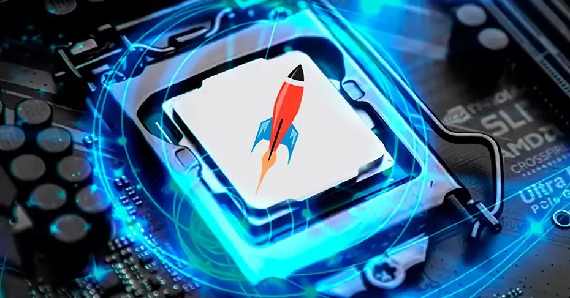

NOTICIAS DE ACTUALIDAD
Para aumentar el rendimiento en CPUs, ¿Intel y AMD abandonarían x86?

Con la transición, ya realizada, de Apple en sus ordenadores Macintosh de utilizar CPUs con ISA x86 a ISA ARM muchos mentideros de la red lo venden como si dicho cambio supusiera por sí mismo un importante aumento en el rendimiento y la potencia. Incluso se llega a vender la ISA x86 como inferior a la ARM. ¿Realmente sería necesario para Intel y AMD abandonarán la ISA x86?
La GPU AMD RX 6700 XT no rinde en minería, ¿más stock para gamers?

Con el inminente lanzamiento de las AMD Radeon RX 6700 XT, muchos nos preguntamos si podremos instalar esta tarjeta gráfica en nuestros ordenadores u ocurrirá como el resto de lanzamientos recientes de NVIDIA y AMD, que han sido casi no vistas por el hecho que se la volverán a llevar los mineros y especuladores. Pues bien, pareces ser que la RX 6700 XT no será tanto del interés de los mineros. Os explicamos los motivos.
¿Por qué es importante la forma de la rejilla de los ventiladores en la caja?

Cuando hablamos de la refrigeración en PC, necesariamente hablamos de ventiladores, y dado que tienen partes móviles con afiladas aspas, es necesario siempre el instalarlos tras una rejilla para evitar que podamos tocarlos accidentalmente y sufrir un accidente. Con los años e igual que los propios ventiladores, la rejilla ha ido evolucionando en forma y disposición, y en este artículo te vamos a contar por qué son tan importantes.
No es una GTX 1660 Super, es la nueva GPU para minería 30HX

Hace poco os hablábamos de que NVIDIA pretendía lanzar al mercado una nueva gama de tarjetas gráficas específicamente diseñadas para minar criptomonedas, resucitando la arquitectura Turing y así liberando un poco al mercado de la escasez actual de GPUs para gaming. Ahora se han filtrado las primeras imágenes de la primera gráfica NVIDIA CMP (Crypto Mining Processor) 30HX, de la mano de Gigabyte y la cual parece obvio que ha salido de una GTX 1660 Super.
Así rinde la nueva GPU AMD RX 6700 XT en gaming, ¿acierto o decepción?

Cuando faltan pocos días para el lanzamiento de la gama media de las RX 6600, y una de las preguntas clave, por no decir la más importante, es sobre el rendimiento de la RX 6700 XT en juegos frente a tarjetas en el mismo rango de precios como son la RTX 3070 y la RTX 3060 Ti de NVIDIA. ¿Qué tal rinde la nueva tarjeta de AMD en gaming?
Las nuevas CPU gaming de Intel rendirán menos en RAM, ¿están limitadas?

Esta semana está caliente con las nuevas CPUs gaming de Intel, porque rendimiento en juegos aparte, las novedades que incluirán con la micro arquitectura Willow Cove van a traer cola. Si algo podía presumir Intel sin demasiados problemas era el hecho de que sus IMC llegaban a frecuencias más altas que sus homólogos en AMD, donde con apenas voltaje de serie en todos los casos se podía setear DDR4-3600, pero con Rocket Lake-S … Esto parece que está más que limitado.